1
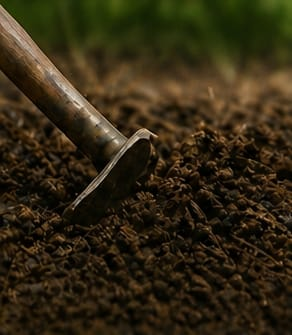
Plowing the Soil
Loosen and turn the soil to prepare a fertile bed.
Most exporters show you the warehouse and the container. We'll show you the whole journey — every stage that turns a tiny seed into the deep-red, sun-cured, lab-tested, export-grade chilli that lands in your country.
A growing season of roughly 150 days from sowing to red harvest, followed by 5–7 days of sun-curing and several days of grading before any pod earns a spot in an export bag. Each stage below corresponds to a real point in our farmer-supplier and warehouse calendar.

Loosen and turn the soil to prepare a fertile bed.
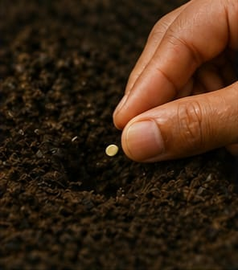
Place seeds in the soil and cover gently.
The seed sprouts and pushes through the soil.
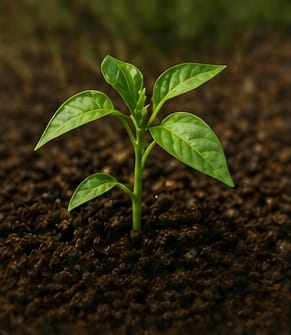
The seedling grows and develops more leaves.
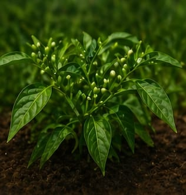
The plant grows bigger and becomes bushy.
White flowers bloom on the plant.
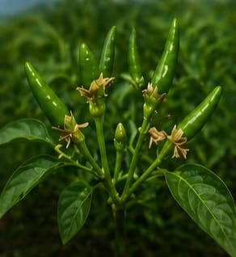
Tiny green chilli nubs appear after flowering.
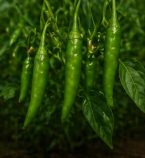
Chillies grow bigger and turn deep green.
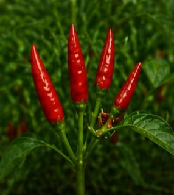
Chillies ripen and turn bright red.
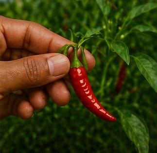
Ripe red chillies are plucked from the plant.
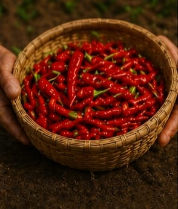
Freshly plucked chillies are collected in baskets.
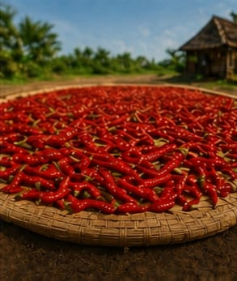
Chillies are spread under the sun to dry for several days.
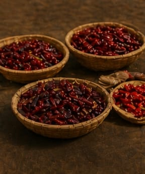
Dried chillies are sorted by size, colour and quality.
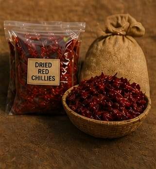
Sorted chillies are packed neatly for storage or sale.
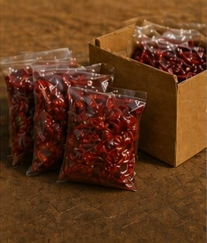
Packed chillies are stored safely and ready for sale.
The 15-step lifecycle ends at "storage." But for an export-grade lot, that's where our work really begins. Here's what we do between the warehouse and the bill of lading.
Every lot tested with a calibrated moisture meter. Anything above 10% is rejected or sent back for further drying — high moisture is the #1 cause of rejected containers.
Lab-measured pigment value (American Spice Trade Association units). Critical for buyers who blend by colour rather than weight — Byadgi 100+, Kashmiri 110+, Guntur 32+.
Tested at NABL-approved labs for aflatoxin (ppb), pesticide residue, and microbial load. We share the COA before container loading, not after.
Sorted by length, colour uniformity, broken percentage, and stem condition. Foreign matter (dust, leaves, stones) brought to under 1% by hand-sorting under tube-light inspection.
Post-pack fumigation per importing country's phytosanitary requirements. Methyl bromide or aluminium phosphide depending on destination, with treatment certificate enclosed.
Once we agree on price and spec, here's how the next 18 to 30 days typically unfold.
Variety, grade, packaging, port, payment term, target ETA all locked. Pro-forma invoice issued; advance / LC initiated.
Procurement head walks the yard, picks lots matching your spec, samples sent to lab.
Pre-shipment sample dispatched by courier and digital photos shared via WhatsApp.
Lot graded, packed in agreed bag type, marked with shipping marks, palletised if required.
Phytosanitary certificate, certificate of origin, fumigation certificate, COA, packing list and commercial invoice prepared.
Container moved to Krishnapatnam / Chennai / Nhava Sheva. Bill of lading issued post sailing. Documents released as per payment term.
We send a 3-minute walkthrough video — drying yard, sorting line, packing bay, dispatch dock — to every serious enquiry. Just ask for it.